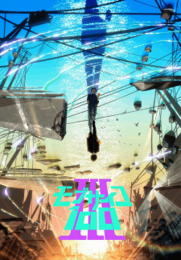
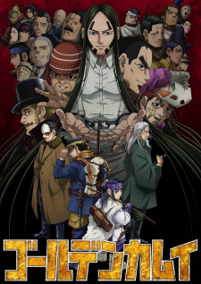

10 List Top Airing Anime On 2022.
| 1. |
 |
Bleach : Sennen Kessen-hen- Rating : 9.10
- Eps : 13
- Genre : Action, Adventure, Fantasy
- Synopsis:
- Substitute Soul Reaper Ichigo Kurosaki spends his days fighting against Hollows, dangerous evil spirits that threaten Karakura Town. Ichigo carries out his quest with his closest allies: Orihime Inoue, his childhood friend with a talent for healing; Yasutora Sado, his high school classmate with superhuman strength; and Uryuu Ishida, Ichigo's Quincy rival.
|
| 2. |
 |
Chainsaw Man- Rating : 8.83
- Eps : 12
- Genre : Action, Fantasy, Gore
- Synopsis:
- Denji is robbed of a normal teenage life, left with nothing but his deadbeat father's overwhelming debt. His only companion is his pet, the chainsaw devil Pochita, with whom he slays devils for money that inevitably ends up in the yakuza's pockets. All Denji can do is dream of a good, simple life: one with delicious food and a beautiful girlfriend by his side. But an act of greedy betrayal by the yakuza leads to Denji's brutal, untimely death, crushing all hope of him ever achieving happiness.
|
| 3. |
 |
Bochi the Rock!- Rating : 8.80
- Eps : 12
- Genre : Action
- Synopsis:
- Yearning to make friends and perform live with a band, lonely and socially anxious Hitori "Bocchi" Gotou devotes her time to playing the guitar. On a fateful day, Bocchi meets the outgoing drummer Nijika Ijichi, who invites her to join Kessoku Band when their guitarist, Ikuyo Kita, flees before their first show. Soon after, Bocchi meets her final bandmate—the cool bassist Ryou Yamada.
|
| 4. |
 |
One Piece- Rating : 8.68
- Eps : ?
- Genre : Action, Adventure, Fantasy, Shounen
- Synopsis:
- Gol D. Roger was known as the "Pirate King," the strongest and most infamous being to have sailed the Grand Line. The capture and execution of Roger by the World Government brought a change throughout the world. His last words before his death revealed the existence of the greatest treasure in the world, One Piece. It was this revelation that brought about the Grand Age of Pirates, men who dreamed of finding One Piece—which promises an unlimited amount of riches and fame—and quite possibly the pinnacle of glory and the title of the Pirate King.
|
| 5. |
 |
Mob Psycho 100 III- Rating : 8.65
- Eps : ?
- Genre : Action, Comedy, Supernatural
- Synopsis:
- After foiling a world-threatening plot, Shigeo "Mob" Kageyama returns to tackle the more exhausting aspects of his mundane life—starting with filling out his school's nerve-racking career form. Meanwhile, he continues to assist his mentor Arataka Reigen and the office's new recruit, Katsuya Serizawa, in solving paranormal cases of their clients. While continuing his duties, Mob also works on gaining more independence in his esper and human lives, as well as trying to integrate better with the people around him.
|
| 6. |
 |
Spy x Family Part 2- Rating : 8.56
- Eps : 13
- Genre : Action, Comedy
- Synopsis:
- With Anya Forger successfully enrolled at the renowned Eden Academy, Operation Strix advances to its second phase. To investigate Ostanian politician Donovan Desmond, Anya must either befriend his son Damian or collect eight Stella Stars to become an Imperial Scholar. Fortunately, Anya has already acquired her first star. In celebration, her adoptive father, Loid, decides to fulfill her wish to adopt a dog.
|
| 7. |
 |
Golden Kamuy 4th Season- Rating : 8.31
- Eps : 13
- Genre : Action, Adventure
- Synopsis:
- Fourth season of Golden Kamuy.
|
| 8. |
 |
Holo no Graffiti- Rating : 8.29
- Eps : ?
- Genre : Comedy
- Synopsis:
- From unraveling the secrets of opening and closing doors to defusing surprise packages more commonly known as bombs, there is never a dull day at the Hololive Production office! Holo no Graffiti follows an eccentric cast of Virtual YouTubers, also known as "VTubers," going about their absurd yet hilarious daily lives, detailing all their cute moments and mishaps.
|
| 9. |
 |
Boku no Hero Academia 6th Season- Rating : 8.28
- Eps : 25
- Genre : Action
- Synopsis:
- With Tomura Shigaraki at its helm, the former Liberation Army is now known as the Paranormal Liberation Front. This organized criminal group poses an immense threat to the Hero Association, not only because of its sheer size and strength, but also the overpowering quirks of Jin "Twice" Bubaigawara and Gigantomachia.
As new intel from the covert hero Keigo "Hawks" Takami confirms that Shigaraki is nowhere to be seen, the Hero Association decides to strike the enemy headquarters with a surprise attack using the entirety of its assets—and the UA students find themselves on the battlefield once again. As the fight rages on, the unsuspecting villains must regroup and push back, but the brave heroes are determined to eradicate every last one of them.
|
| 10. |
 |
Blue Lock- Rating : 8.24
- Eps : 24
- Genre : Sport
- Synopsis:
- Yoichi Isagi was mere moments away from scoring a goal that would have sent his high school soccer team to the nationals, but a split-second decision to pass the ball to his teammate cost him that reality. Bitter, confused, and disappointed, Isagi wonders if the outcome would have been different had he not made the pass. When the young striker returns home, an invitation from the Japan Football Union awaits him. Through an arbitrary and biased decision-making process, Isagi is one of three hundred U-18 strikers selected for a controversial project named Blue Lock.
|